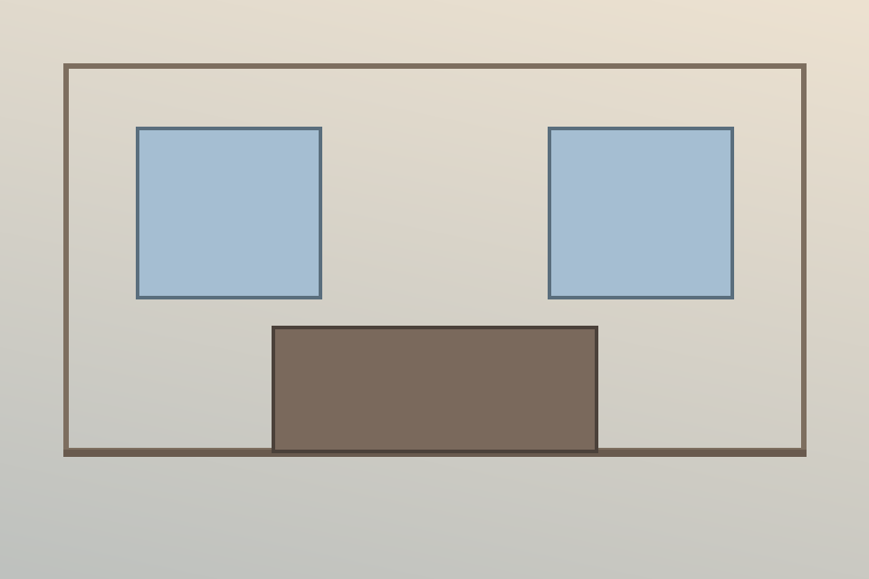

Bounded ingress
Multipart bytes, MIME policy, prompt length
A security-conscious orchestration layer for interior image inpainting—designed around strict mask authority, provider isolation, and exact restoration of every protected pixel.
01 / BOUNDARY LAB
Upload an aligned image and mask, or use the synthetic sample. The local simulator changes only white-mask pixels and computes the proof without transmitting your files.

Privacy by construction. This page has no API calls, analytics, cookies, or third-party scripts. Its Content Security Policy blocks outbound connections.
Scope boundary: this browser lab demonstrates deterministic mask/compositing behavior—not generative quality. The repository contains a mocked and contract-tested BFL adapter; live provider execution requires approved credentials, region, budget, and acceptance criteria.
02 / ARCHITECTURE
The provisional FastAPI contract isolates ingress, image policy, provider execution, and final compositing so each boundary can be reviewed and replaced independently.
Multipart bytes, MIME policy, prompt length
Decode limits, EXIF orientation, RGB policy
White edits, black protects, aligned geometry
Deterministic demo or BFL protocol boundary
Original pixels re-applied outside hard mask
# Provisional PoC contract
curl -X POST http://localhost:8000/poc/v1/inpaint \
-F "image=@room.png;type=image/png" \
-F "mask=@mask.png;type=image/png" \
-F "prompt=Restyle the authorized wall" \
--output result.png
# Response evidence headers
x-poc-provider: deterministic-demo
content-type: image/png
cache-control: no-storeNON-NEGOTIABLE INVARIANT
“The provider may propose pixels. The hard mask decides where they are allowed to survive.”
03 / VERIFIABLE EVIDENCE
The repository separates demonstrated properties from open production risks. CI checks the supported runtime matrix on every change.
changed pixels outside the authorized hard mask
pixel comparisons in the approved synthetic artifact
Python 3.11, 3.12 and 3.13 execute the test suite
twelve tests are required on every supported runtime
View GitHub Actions| Control | Method | Current evidence | Status |
|---|---|---|---|
| Static correctness | Ruff lint + format | Whole Python tree | PASS |
| Type boundary | Strict mypy | Minimum Python 3.11 | PASS |
| Runtime behavior | pytest matrix | 3.11 / 3.12 / 3.13 | PASS |
| Live model quality | Approved-provider evaluation | Credential + budget required | OPEN RISK |
| Final client contract | OpenAPI conformance | Client schema not supplied | OPEN RISK |
04 / SECURITY POSTURE
Controls are placed where untrusted bytes, remote provider behavior, and short-lived result URLs enter the system—not added as an afterthought.
Read security notesEncoded bytes and decoded megapixels are capped; animated inputs are rejected.
No arbitrary remote input URLs; provider result downloads require HTTPS and approved hosts.
Credentials come from environment variables and are never embedded in requests or artifacts.
Prompt size, polling deadline, retries, response bytes, and provider lifetime are bounded.
READY FOR CONTRACT DISCOVERY
The next phase replaces provisional assumptions with client-owned contracts, approved infrastructure, and measurable visual-quality criteria.